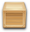

About
News
Downloads
Screenshots
Documentation
Bugs
Translations
Author
To compile or install SocNetV, you need Qt 4.4 and QtWebKit development files. See
Instructions
Warning: version 0.80 is temporarily available only in source code

Source code
SocNetV-0.80.tar.gz
Fedora
32bit .RPM
openSUSE
32bit .RPM
Debian
32bit .DEB
Ubuntu
32bit .DEB
Gentoo
ebuild
Sid/Sidux
32bit .DEB
Mandriva
32bit .RPM
Archlinux
From AUR
Windows
32bit Binaries .ZIP
Mac OS
From Fink
Development
Latest tarball